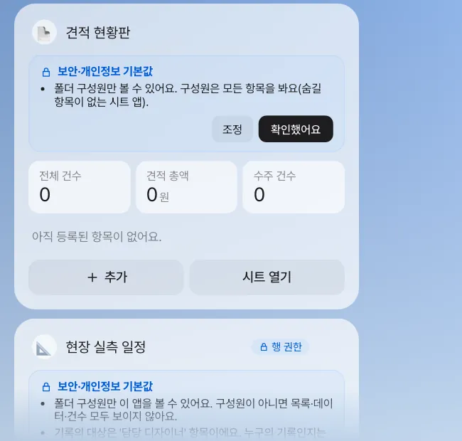
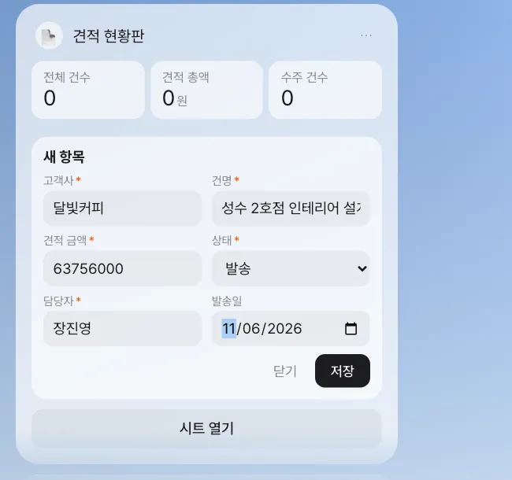
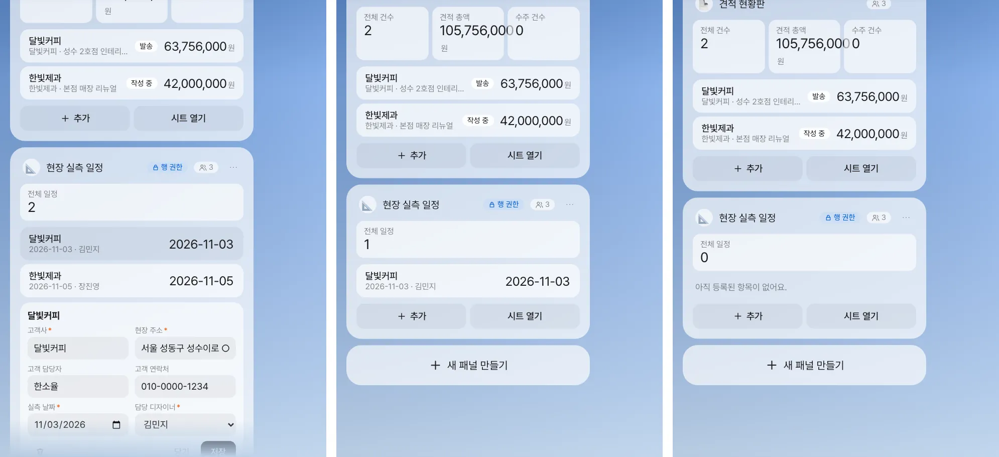

견적이 몇 건 나갔는지, 누가 언제 현장 실측을 가는지 — 팀이 함께 보는 작은 표는 엑셀 파일로 돌리면 금세 여러 벌이 됩니다. 패널 앱은 말 한마디로 만드는 홈 위의 미니앱입니다. 데이터는 공유 폴더의 시트나 데이터베이스에 한 벌만 두고, 함께 쓰는 사람과 볼 수 있는 행·항목을 앱이 지킵니다.
왜 패널 앱인가#
11장의 예약 미션은 결과를 나 한 사람에게 알려 줍니다. 이번에는 팀이 함께 보는 정보입니다.
달빛커피 견적이 나가자 장진영 팀장은 “지금 나간 견적이 몇 건이고 총액이 얼마인지”를 매번 엑셀을 열어 셉니다. 박서연은 재무용으로 따로 표를 만들고, 김민지는 현장 실측 일정을 메신저로 묻습니다. 같은 정보가 세 군데에 있습니다.
패널 앱은 이것을 한 곳에 모읍니다.
| 특징 | 내용 |
|---|---|
| 말로 만든다 | “견적 현황판 패널을 만들어 줘…” — 항목·선택지·요약 숫자를 비서가 설계 |
| 홈에 산다 | 채팅 왼쪽 홈에 카드로 붙고, 요약 타일(전체 건수·총액 등)과 목록, 「추가」·「시트 열기」가 있음 |
| 데이터는 한 벌 | 시트 앱은 공유 폴더의 .xlsx, 보안이 필요한 앱은 데이터베이스 |
| 함께 쓴다 | 폴더 구성원과 공유. 고칠 때마다 누가 무엇을 바꿨는지 기록 |
| 기본이 안전 | 숨길 항목이 있으면 자동으로 데이터베이스에 두고, 행·항목 단위로 보이는 범위를 지킴 |
따라 하기 1 — 견적 현황판 (시트 앱)#
견적 현황판 패널을 만들어 줘. 고객사, 건명, 견적 금액, 상태(작성 중·발송·수주·실주), 담당자, 발송일을 등록하고 관리하는 앱이고, 팀원들과 같이 쓸 거야.
1분쯤 뒤 답과 칩 “‘견적 현황판’ 패널이 Home에 올라갔어요 · 견적 현황판 폴더”가 오고, 홈에 패널이 생깁니다.

확인할 것: 비서의 답에 항목 목록(고객사*, 건명*, 견적 금액(숫자)*, 상태(작성 중/발송/수주/실주)*, 담당자*, 발송일(날짜))과 데이터 위치(“‘견적 현황판’ 폴더의 견적 현황판.xlsx”)가 적혀 있습니다. *는 필수 항목입니다.
패널 위의 보안·개인정보 기본값 카드를 읽고 「확인했어요」를 누릅니다. 이 앱은 숨길 항목이 없는 시트 앱이라 “폴더 구성원만 볼 수 있어요. 구성원은 모든 항목을 봐요”라고 나옵니다. 만든 사람이 이 카드를 확인하기 전에는 공유할 수 없습니다.
「추가」를 누르면 등록 양식이 열립니다. 달빛커피 견적을 넣습니다.

저장하면 요약 타일이 바로 바뀝니다. 「시트 열기」를 누르면 같은 데이터가 이음오피스 시트로 열리고, 시트에서 고쳐 저장한 값도 패널에 반영됩니다. 채팅으로도 행을 넣을 수 있습니다.
견적 현황판에 추가해 줘: 고객사 해솔베이커리, 건명 판교점 인테리어, 견적 금액 38,000,000원, 상태 작성 중, 담당자 박서연.
비서가 “견적 현황판에 넣었어요: … (모두 3건)”이라고 답하고 패널에 한 줄이 늘어납니다. 숫자 항목은 숫자로 적는 것이 안전합니다. 실습에서 금액을 3,800만 원으로 적었을 때는 “고치지 못했어요: ‘견적 금액’ 을(를) 적어 주세요.”라며 넣지 않았습니다. 필수 항목이 빠지면 저장하지 않는 것은 양식과 같습니다.
따라 하기 2 — 팀원과 공유#
패널 메뉴(⋯)의 「공유하기」에서 김민지·박서연을 폴더 구성원으로 넣습니다(편집 권한). 패널 머리줄에 구성원 수(사람 아이콘 옆 3)가 붙고, 두 사람의 홈에도 같은 패널이 나타납니다. 누가 행을 추가하면 다른 구성원의 패널이 곧바로 새로 고쳐집니다.
데이터는 공유 폴더에 있으므로 13장의 폴더 화면에서 apps/견적 현황판.xlsx와 정의 파일 견적 현황판.panel.json을 볼 수 있고, 행을 추가할 때마다 “패널: 견적 현황판 행 추가 – 달빛커피” 같은 기록이 쌓입니다.
따라 하기 3 — 현장 실측 일정 (데이터베이스 앱)#
이번에는 고객 연락처와 현장 주소가 들어가는 앱입니다.
현장 실측 일정 패널을 만들어 줘. 고객사, 현장 주소, 고객 담당자, 고객 연락처, 실측 날짜, 담당 디자이너를 관리해. 고객 연락처는 개인정보라 담당 디자이너와 만든 사람만 보고, 일정은 담당 디자이너 본인만 고칠 수 있어.
비서의 답이 앞의 앱과 다릅니다(실습 원문).
데이터는 데이터베이스에 행 단위 권한으로 저장돼요.
권한: 보기 — 만든 사람 또는 '담당 디자이너'이(가) 본인인 경우 / 만들기 — 구성원 모두 /
고치기 — '담당 디자이너'이(가) 본인인 경우 또는 폴더 소유자 / 지우기 — (같음)
그리고 기본값 카드에는 “‘현장 주소’·‘고객 연락처’는 개인정보라 본인(기록의 대상)·기록한 사람·폴더 소유자만 봐요. 다른 구성원에게는 ‘비공개’로 보여요”, “숨겨야 할 항목이 있어 데이터는 시트가 아니라 데이터베이스에 저장돼요”가 적혀 있습니다. 패널 머리줄에는 자물쇠가 달린 「행 권한」 표시가 붙습니다.
왜 데이터베이스인가#
시트 파일은 열 수 있는 사람이 파일 전체를 봅니다. 한 칸만 숨길 방법이 없습니다. 그래서 패널 앱은 숨길 항목이 있거나 “본인만 고친다” 같은 행 규칙이 있으면 데이터를 데이터베이스에 둡니다. 그러면 누가 묻든(패널·채팅의 비서·시트 사본) 데이터베이스가 같은 규칙으로 걸러서 줍니다. 앱 화면이 실수로 다 보여 주는 일이 생길 수 없습니다.
| 말로 한 규칙 | 패널 앱이 만든 규칙 |
|---|---|
| “고객 연락처는 개인정보” | 항목 민감도 개인정보 — 본인·기록한 사람·소유자 외에는 가림 |
| “담당 디자이너와 만든 사람만 본다” | 행 보기 규칙 — 만든 사람 또는 담당 디자이너 본인 |
| “본인만 고친다” | 행 고치기·지우기 규칙 — 담당 디자이너 본인 또는 폴더 소유자 |
규칙은 정해진 말(본인·만든 사람·역할·구성원…)로만 만들어지고, 서버가 데이터베이스 규칙으로 바꿉니다. 패널 메뉴(⋯)의 「권한 규칙」에서 직접 조정할 수 있고, 기본값보다 느슨하게 바꾸면 한 번 더 확인을 받고 기록이 남습니다.
세 사람의 화면#
장진영 팀장이 두 건을 넣었습니다: 달빛커피(담당 디자이너 김민지), 한빛제과(담당 디자이너 장진영). 세 사람이 각자 홈을 엽니다.

확인할 것: 김민지 화면의 전체 일정이 1, 박서연은 0. 견적 현황판(시트 앱)은 세 사람 모두 같은 건수를 봅니다(사진에서는 2건). 실습에서 박서연이 채팅에 현장 실측 일정 보여 줘라고 하자 비서는 “현장 실측 일정에 아직 행이 없어요.”라고 답했습니다. 비서도 박서연의 권한으로 데이터베이스에 묻기 때문입니다.
기록이 쌓이는 앱 (이벤트 소싱)#
예산이나 휴가 일수처럼 잔액이 중요한 일은 “현재 값”을 고치는 대신 기록을 쌓는 앱이 안전합니다. “예산 배정 1,000만 원”, “지출 230만 원”, “지출 취소” 같은 기록만 추가하고, 남은 예산은 기록에서 다시 계산합니다.
| 일반 앱 | 기록이 쌓이는 앱 |
|---|---|
| 잔액 칸을 고친다 | 기록을 한 줄 더한다 |
| 누가 언제 바꿨는지 따로 찾아야 | 기록 자체가 이력 |
| 잘못 고치면 원래 값을 모름 | 지난 기록은 고치거나 지울 수 없음 — 취소도 새 기록 |
| — | 기록 종류마다 할 수 있는 사람(예: 배정은 재무 담당만, 스스로 배정 불가) |
요청은 이렇게 합니다: 2호점 공사 예산 장부 패널을 만들어 줘. 예산 배정·지출·지출 취소를 기록으로 쌓고 잔액은 기록에서 계산해. 배정은 재무 담당만, 지출은 누구나 기록해.
기록이 쌓이는 앱이 만들어지지 않을 때
현재 버전에서는 이런 앱의 설계가 시간 초과로 끝나 “패널을 만들지 못했어요”가 뜰 수 있습니다. 그때는 잠시 뒤 다시 요청하고, 만들어지는 모습은 이벤트 소싱 휴가 관리 영상에서 확인하세요.
기본 보안, 쉬운 말로#
| 기본값 | 뜻 |
|---|---|
| 구성원만 | 폴더 구성원이 아니면 앱 목록·데이터·건수 모두 보이지 않습니다 |
| 항목마다 민감도 | 일반 / 내부 / 개인정보 / 민감. 개인정보·민감 항목은 기본으로 가려집니다 |
| 합계도 조심 | 민감한 숫자의 팀 합계는 세 명 이상 모였을 때만 보여 줍니다(한 사람의 값을 역산하지 못하게) |
| 먼저 확인 | 만든 사람이 기본값 카드를 「확인했어요」로 읽어야 공유할 수 있습니다 |
| 시트 사본 | 데이터베이스 앱을 「시트 열기」로 열면 내가 볼 수 있는 행·항목만 담긴 사본이 열립니다 |
다음 장으로#
여기까지가 3부 「반복 줄이기」입니다. 패널 앱의 데이터가 공유 폴더에 있었듯이, 팀으로 일하려면 자료를 한곳에 모아야 합니다. 다음 장부터 4부 「팀으로 일하기」가 시작됩니다. 먼저 공유 폴더에 달빛커피 2호점 자료를 모으고 김민지·박서연을 구성원으로 들입니다(13장).
영상으로 보기
확인 문제
- 견적 현황판에 “견적 금액은 재무 담당만 보게 해 줘”라는 규칙을 더하면 데이터는 어디에 저장될까요?
- 박서연이 현장 실측 일정에서 아무것도 보지 못합니다. 박서연에게 달빛커피 일정만 보여 주려면 무엇을 바꾸면 될까요?
- 공사 예산 장부에서 지출 230만 원을 잘못 넣었습니다. 기록이 쌓이는 앱에서는 어떻게 바로잡나요?
답
- 데이터베이스입니다. 숨길 항목(민감)이나 행 규칙이 생기면 시트로는 지킬 수 없으므로 데이터베이스에 둡니다.
- 보기 규칙을 넓히거나(예: 「권한 규칙」에서 보기를 구성원 모두로), 달빛커피 행의 담당 디자이너를 박서연으로 바꿉니다. 보기를 넓혀도 현장 주소·연락처는 개인정보라 박서연에게는 ‘비공개’로 보입니다.
- 지난 기록을 고치지 않고 “지출 취소” 기록을 새로 더합니다. 잔액은 기록에서 다시 계산되어 바로잡히고, 잘못 넣었던 사실도 이력으로 남습니다.